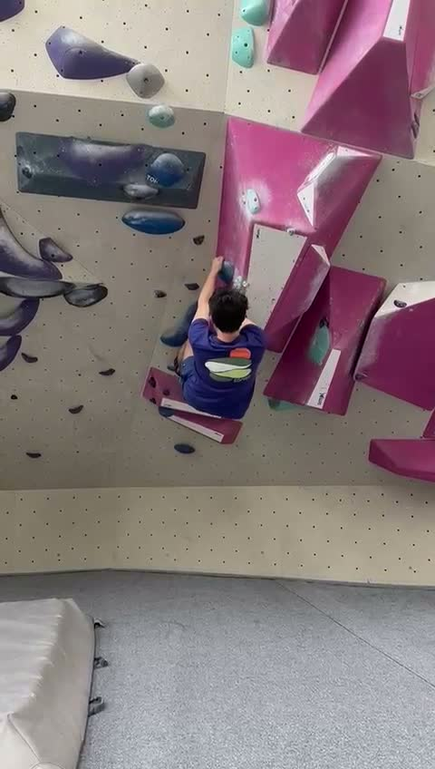
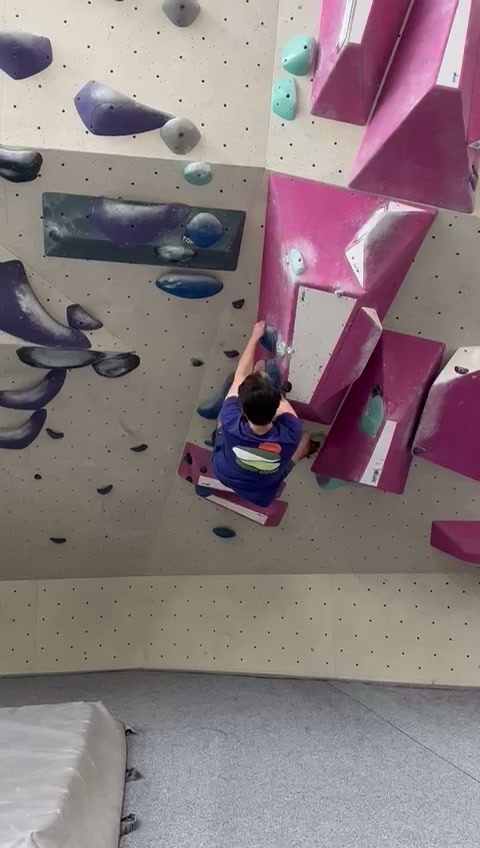
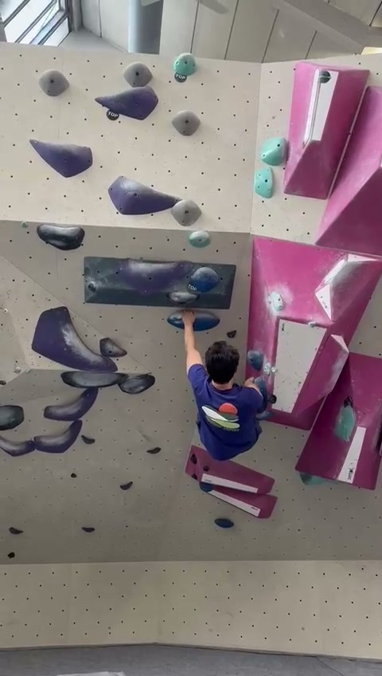
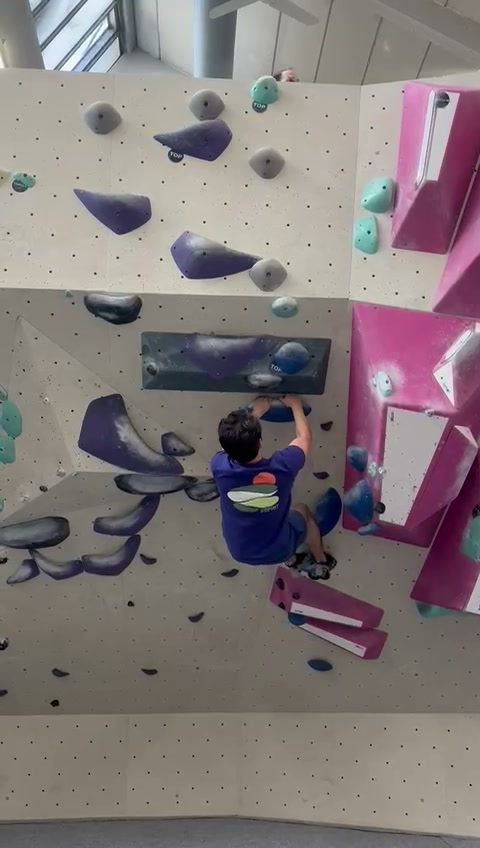
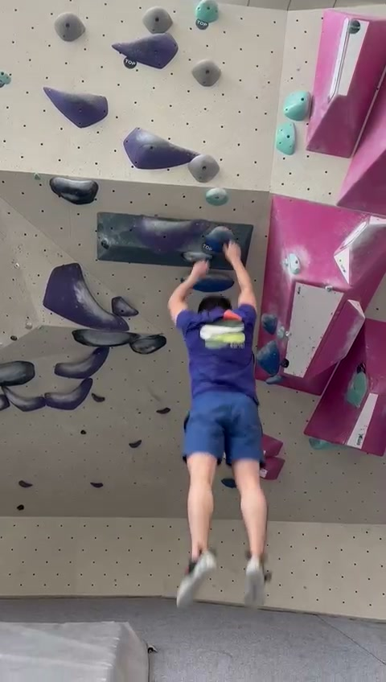

Arms moderately bent. Hips square. Good proximity to wall but energy-intensive posture.
Video: f781f978-4ab2-470b-a26c-977e255b2565.mp4

Arms moderately bent. Hips square. Good proximity to wall but energy-intensive posture.

Moving left. Left arm near extension (good), but right arm locked off at 90 degrees.

First clear hip rotation. Left hip in, arm extended. Improved foot weighting.

High-energy match. Both arms bent, body compressed. Missing a rest on skeleton.

Full foot cut. Total reliance on upper body. Catching the hold with straight arms (dynamic).
The climber shows intermediate movement but is significantly hampered by over-reliance on upper body strength. The biggest gains will come from: 1) Straightening arms between moves, 2) Incorporating deliberate hip rotation, and 3) Using flagging for balance on overhanging sections.